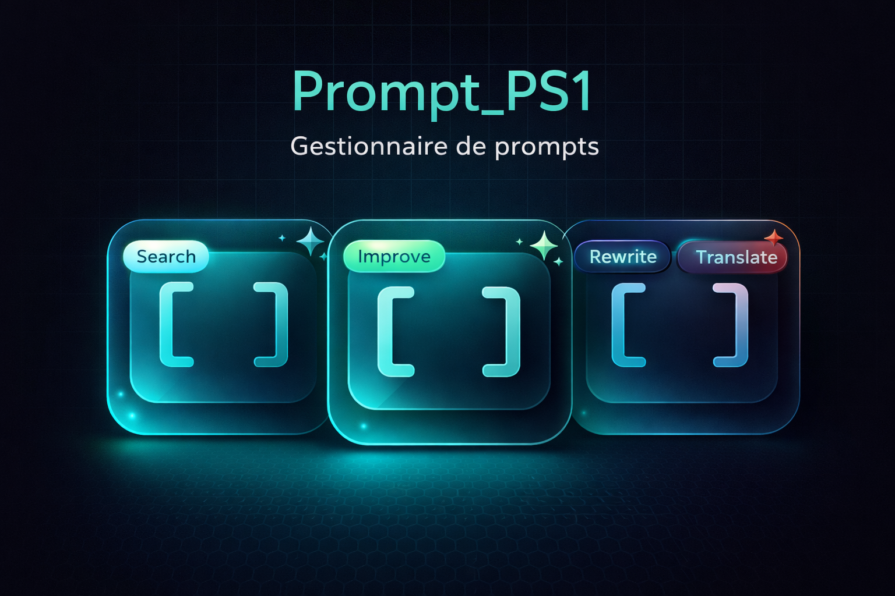
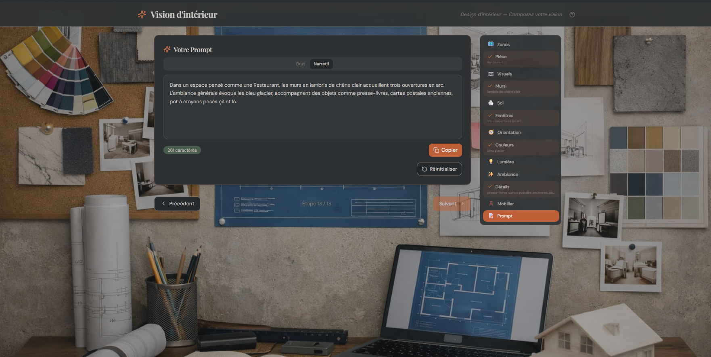

- Conception d'outils de productivité pour la prospection commerciale
- Automatisation de workflows (recherche, synthèse, organisation)
- Compétences : Prompting IA, LLMOps, organisation méthodique
→ Détails complets dans l'onglet PrecurSys
Business Developer • Hôtellerie • Tech
Relation client • Projets • Outils digitaux
Après 20 ans d'expérience terrain en relation client et vente dans la restauration, je me reconvertis vers le business development dans le digital. Mon parcours m'a permis de développer des compétences clés transférables : écoute active, identification des besoins clients, argumentation commerciale, gestion de la pression et travail d'équipe.
Aujourd'hui, je souhaite mettre ces savoir-faire au service d'une entreprise innovante en tant que Business Developer, tout en continuant à explorer les outils digitaux (automatisation, analyse de données) qui optimisent les processus métier.
20 ans d'expérience terrain en relation client et vente | Compétences transférables B2B
Après 20 ans d'expérience terrain en relation client et vente dans la restauration, je me reconvertis vers le business development dans le digital. Mon parcours m'a permis de développer des compétences clés transférables : écoute active, identification des besoins clients, argumentation commerciale, gestion des objections, et travail sous pression.
Je recherche une alternance pour apprendre la méthode BD et l'appliquer dans un environnement B2B ou SaaS.
20 ans d'écoute active, reformulation des besoins, gestion des attentes et fidélisation
Recommandations personnalisées, upsell naturel, argumentation adaptée au profil client
Réponse aux demandes spéciales, contraintes clients, avec solutions adaptées
Gestion de forte affluence (100+ couverts), priorisation, efficacité
Interface clients-équipe, transmission d'informations claires et précises
Rigueur dans le suivi des processus, ponctualité, respect des engagements
Caisses, logiciels POS, suivi des transactions, trésorerie quotidienne
Capacité à gérer plusieurs tâches simultanées et s'adapter aux imprévus
→ Détails complets dans l'onglet PrecurSys
→ Parcours complet dans l'onglet Hôtellerie
Immédiate pour une alternance
Région Occitanie (Montpellier, Béziers, Narbonne)
Appétence pour le digital, volonté d'apprendre la prospection
Stratégie (échecs), discipline (judo, boxe)
Chef de rang • Responsable de salle • Management d'équipe • Service d'excellence
Accueil, service, encaissement
Atelier digital — Outils de productivité, automatisations et méthodes pour la prospection B2B
PrecurSys
PrecurSys est un projet personnel (à temps partiel) axé sur l'amélioration de la productivité commerciale grâce à des outils et des contenus adaptés. L'objectif est d'optimiser les workflows de prospection, de recherche et d'organisation en utilisant l'IA générative et les bonnes pratiques méthodologiques.
Scripts et templates pour structurer l'information, automatiser les tâches répétitives et accélérer la recherche de données pertinentes.
Mise en place de processus automatisés pour la recherche, la synthèse d'informations, et l'organisation de contenus (veille, prospection, documentation).
Création de supports de prospection, fiches produits, argumentaires, pages de destination (landing pages), et contenus pour le digital.
Définition d'objectifs clairs, suivi rigoureux, itération continue. Application de principes d'amélioration continue et de discipline opérationnelle.
Ce projet est un levier de productivité, pas une distraction. Il me permet d'apprendre des outils modernes (IA, automatisation) et de développer des compétences directement transférables au business development : recherche de leads, structuration de contenus commerciaux, optimisation de processus, discipline dans l'exécution.
Mon approche reste pragmatique : utiliser la technologie pour aller plus vite, mieux organiser, et rester concentré sur les résultats.
CV, exports LinkedIn, projets et ressources
CV optimisé pour les postes de Business Developer en alternance, focus compétences transférables.
TéléchargerParcours complet dans l'hôtellerie-restauration avec 20 ans d'expérience détaillée.
TéléchargerProfil LinkedIn complet avec toutes les expériences et recommandations.
Voir le profilCINTR est une application mobile-first qui digitalise ton dressing et te propose chaque jour des tenues personnalisées grâce à l'intelligence artificielle.
On passe en moyenne 20 minutes par jour à choisir quoi porter. On oublie ce qu'on a, on rachète en double, et on ne porte que 20% de notre garde-robe.
CINTR scanne tes vêtements en une photo — l'IA détecte la catégorie, la couleur, le style, détoure automatiquement le fond — et construit ton dressing virtuel. Ensuite, notre styliste IA te génère des tenues adaptées à ta météo, ton occasion et ton style.
Freemium. L'ajout manuel de vêtements est gratuit. Le scan IA, le styliste et les fonctionnalités avancées sont réservés aux abonnés Premium.
En une phrase : CINTR, c'est comme avoir une styliste personnelle dans ta poche — qui connaît chaque pièce de ton dressing.

prompt_PS1" style=" width: 100%; max-width: 800px; border-radius: 8px; margin: 1rem 0; " />>prompt_PS1 est un gestionnaire de prompts professionnel avec amélioration IA, système de notation multi-axes et détection automatique de méthodologies.
Si le score baisse après amélioration ou si le prompt dépasse la limite de longueur, le remplacement est bloqué — seule la duplication est proposée. Le système préserve toujours le ton original et assure un enrichissement contrôlé.
En une phrase : >prompt_PS1 transforme vos prompts bruts en instructions professionnelles optimisées, évaluées et méthodologiquement structurées.
⚠️ Premier chargement : La vectorisation de 3 288 prompts par ONNX peut prendre plusieurs minutes lors de la première visite.
Découvrir >prompt_PS1
Vision d'intérieur est votre assistant créatif pour concevoir des scènes d'aménagement intérieur. Il génère un prompt détaillé que vous pouvez utiliser avec des outils d'IA générative (Midjourney, DALL·E, Stable Diffusion…) pour visualiser votre espace idéal.
En une phrase : Vision d'intérieur transforme vos idées d'aménagement en prompts professionnels pour générer des visualisations photoréalistes de vos espaces.
Sommaire interactif de l'écosystème technique. Chaque projet, son framework, son état, son ambition.
Application de suivi de rituels quotidiens axée sur l'introspection honnête. Système de cartes personnelles, mode jour/nuit, verrouillage anti-addiction, journaling anonyme, privacy-first.
Hub desktop modulaire local : AI Studio (LLM local), bibliothèque de prompts, atelier SVG, intégration subs2md, et Slash commands personnalisées.
Application web de recettes à partir des ingrédients du frigo. Interface moderne avec backend Supabase.
Site vitrine boutique de montres au design futuriste, accompagné d'un outil Gradio de recherche d'images de cadrans via DuckDuckGo.
Pipeline d'ingestion multimédia → brouillons → produits éditoriaux. Flux RSS, scraping web, embeddings MiniLM, LLM local, exports web/ebook.
Déploiement et intégration dans nOva Hub de cet outil de récupération de sous-titres YouTube (yt-dlp), avec interface Flask personnalisée.
Site personnel multi-profils — onglets Business Developer, Hôtellerie, PrecurSys, Portfolio. Zéro dépendance : HTML/CSS/JS pur.
Collection de skins Rainmeter pour Windows : lecteur YouTube Music (mpv), outils ImageMagick (redimensionnement, conversion, montages).
Répertoire d'utilitaires : formatage d'espaces blancs, générateur de cartes SVG via Inkscape, scaffold de templates SVG.
Ressources pédagogiques en cours : 30 Days of JS/Python/React (Asabeneh Yetayeh), ML For Beginners (Microsoft), buildYOU-ebook.
Prompting IA, LLMOps, automatisation de workflows
HTML5, CSS3, JavaScript vanilla, responsive design
Logiciels POS, CRM, outils de gestion de stocks
Gestion de projet, suivi d'objectifs, documentation